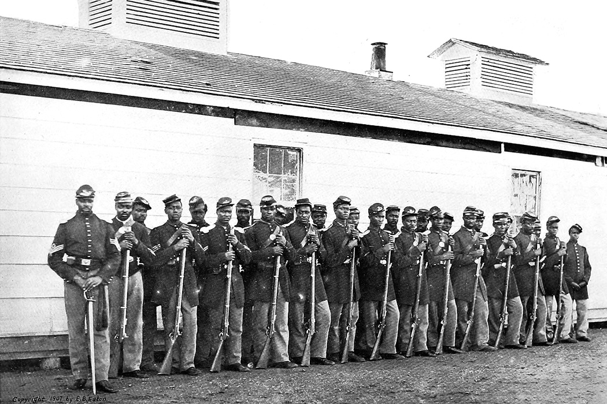

In the 19th century (mostly 1830-1870) the topic of abolitionism became a controversial issue among the American public. This topic caused heated debates and movements. It all began with a growing feud between northern and southern American states. The Southern states stated that slavery should not be abolished, mainly due to the fact that their economy would be greatly affected if slaves were to be freed; slaves were considered as the backbone of their economy. However, the Northern states had supported the idea of putting an end to enslavement of black men and women. The earliest attempt to make changes in society was made by the American Colonization Society (found in 1816). They endorsed the idea of bringing shipped Africans to their homeland – by 1860s they have made effort to send 12,000 Africans home. The earliest people that rebelled against such treatment of Africans were usually religious white women and men or black men or women that escaped the clutches of slave owners.
One of the most important events that took place in American black history was Lincoln’s Emancipation Proclamation (1863) – in which was stated that all slaves in rebelling countries are to be freed. With this even black men were issued to take part in the ongoing war. Unfortunately, the Emancipation Proclamation did not end racist attitudes against black people (for example: black soldiers were segregated from white soldiers, people even considered that black soldier don’t hold the same bravery and skill as white soldiers do and that they should be better off as cooks, guards or scouts).
The war finally ended in 1865, but with all its effort it brought little change to the treatment of black people and even made the following situation worse for the freed slaves. In 1865 the previously proclaimed emancipation was ratified to include the Thirteenth Amendment, which officially abolished all forms of slavery in the U.S. (emancipation from 1863 only freed slaves in the areas of the rebellion. Even though freed African Americans got the emancipation, they were unable to get real jobs due to their lack of education. Some were prohibited from getting jobs due to their skin-color; this was even present in the Northern states. These conditions have made it even more difficult to survive as an African American in the U.S. This has caused many emancipated slaves to return to their former owner’s plantation. Then, there were also cases of slaves not being informed about the emancipation - their owners decided not to do so in order to keep them. Similar unjust situation has happened in the British Empire – after the Slavery Abolition Act of 1833, the country provided payment to former slave owners in order to pay out for the loss of the slaves as business assets to the registered owners of the freed slaves.
The nation was unprepared for the following question of granting freed slaves full citizenship. It took a lot of time and effort to finally issue the Fifteenth Amendment. In 1870 The Fifteenth Amendment was finally issued. It granted all African American men a right to vote. Many discriminatory practices were used in order to prevent black men from voting (mostly in the South). One of those discriminatory practices were the Jim Crow laws – named after a Black minstrel show character (minstrel shows were a type of entertainment that portrayed black characters with the practice of “blackface” – the performers usually painted their faces with shoe polish in order to make it darker, it is considered highly offensive). They existed for about 100 years and were not officially abolished until 1968. Those laws prevented black people from not only voting but also from getting jobs, education or other opportunities to live as normal citizens. Those who denied the Jim Crow laws faced arrest, jail sentences, fines and violence. African Americans faced many hideous crimes against them, which led to the civil rights movement.